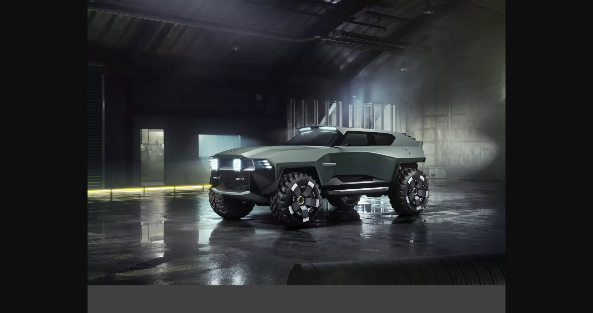
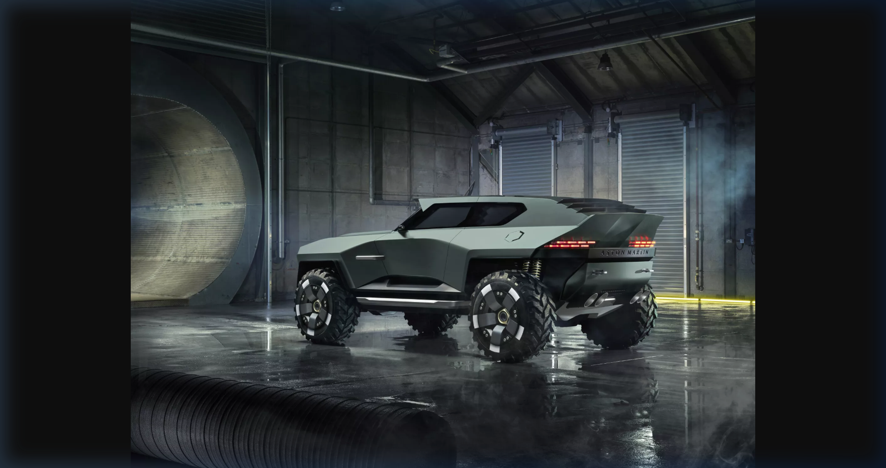
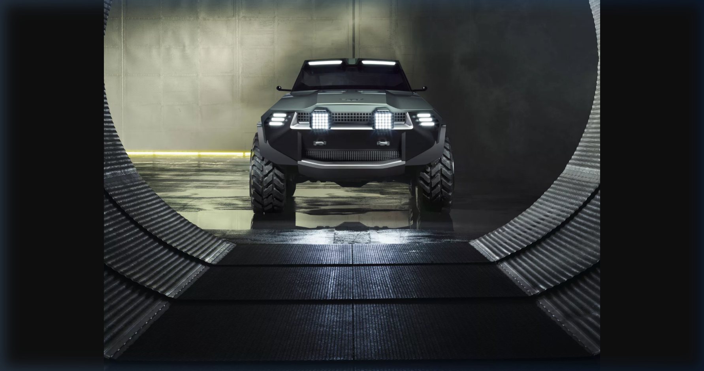
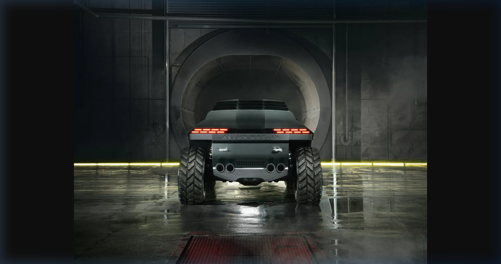
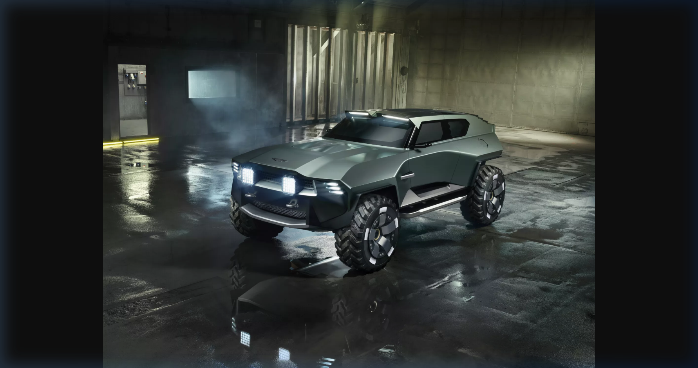

▲ 인피니티 워드 × 애스턴마틴이 공동 설계한 전술 SUV '드레드노트(Dreadnought)' — 칠턴 그린 도색과 헤링본 카본 파이버가 인상적이다 ⓒ Aston Martin / Activision · Infinity Ward
영국의 명차 브랜드 애스턴마틴(Aston Martin)이 전쟁터로 뛰어들었습니다. 《콜 오브 듀티: 모던 워페어 4(Call of Duty: Modern Warfare 4)》의 개발사 인피니티 워드(Infinity Ward)와의 협업을 통해 탄생한 드레드노트(Dreadnought)는 단순한 게임 내 이동 수단이 아닙니다. 현실 세계의 물리적 제약을 완전히 벗어던진 채, 슈퍼카의 폭발적 퍼포먼스와 군용 장갑차의 무결한 방어력을 한 몸에 융합시킨, 그야말로 '전장을 지배하는 기계'로 설계되었습니다.
자동차 브랜드와 AAA 슈팅 게임 간의 협업은 이전에도 있었지만, 두 파트너사가 이토록 깊게 차량의 콘셉트, 디자인 언어, 성능 특성까지 공동 개발한 사례는 매우 드뭅니다. 그 결과물인 드레드노트의 스펙을 모든 각도에서 해부해 보겠습니다.
1. 이름의 유래 — HMS 드레드노트
HMS Dreadnought (1906)
20세기 초 영국 왕립해군이 진수시킨 혁신적 전함. 당대 해군 전력의 기준을 통째로 바꾸며 '드레드노트급 전함'이라는 새로운 장르를 탄생시켰다.
'드레드노트(Dreadnought)'는 1906년 영국 왕립해군이 진수한 전함 HMS 드레드노트에서 따온 이름입니다. 당시 이 전함은 혁신적인 전 중포(全重砲, all-big-gun) 배치와 증기 터빈 추진 시스템을 세계 최초로 결합, 기존 전함들을 단번에 구식으로 만들어버리며 '드레드노트급(Dreadnought-class)'이라는 완전히 새로운 전함의 카테고리를 창조했습니다. 인피니티 워드와 애스턴마틴은 이 전함이 당대 해군 전력의 기준을 새로 써 내려갔듯, 드레드노트 SUV가 게임 속 디지털 전장의 기준을 지배하기를 바라는 마음을 이름에 담았습니다.
2. 개발 배경 — 인피니티 워드 × 애스턴마틴의 협업
드레드노트는 단순히 기존 애스턴마틴 양산 모델에 군용 도색을 입힌 것이 아닙니다. 인피니티 워드의 게임 디자인팀과 애스턴마틴의 디자인 스튜디오가 처음부터 함께 설계(Co-Designed)한 순수 창작 차량입니다.
콘셉트 합의
양사는 '현실의 물리 법칙을 초월하는 전술 이동 수단'을 공동 목표로 설정. 슈퍼카 DNA와 장갑차 내구성의 융합을 핵심 방향으로 채택.
디자인 협업
애스턴마틴 디자인 팀이 자사 아이코닉 디자인 언어(칠턴 그린, 덕테일 스포일러, 대형 그릴 등)를 적용, 게임 엔진에 최적화된 디테일로 재해석.
물리 엔진 튜닝
MW4 물리 엔진을 기반으로 AWD 최고 기동성과 빠른 최고 속도를 게임 내에서 구현. V12 배기음은 별도 사운드 엔지니어링을 거쳐 게임 내 최고 수준으로 재현.
공개 발표
MW4 출시(2026년 10월 23일) 이전 애스턴마틴 공식 채널 및 callofduty.com을 통해 공동 공개.
3. 퍼포먼스 — V12의 포효와 AWD 제압력

▲ AWD 구동계로 어떤 전장 지형도 압도하는 드레드노트의 역동적인 측면 실루엣 ⓒ Aston Martin / Activision · Infinity Ward
엔진
V12
슈퍼카급 출력, 드라마틱한 자연흡기 배기음 구현
구동 방식
AWD
전 지형 최상의 트랙션과 가속 안정성 제공
오프로드 성능
최상급
MW4 물리 엔진 기반 최고 수준의 험지 기동성
장갑
밀리터리급
중화기 집중 사격도 견디는 전술급 장갑판
배기
쿼드 팁
차체 후방 4구 배기관, 존재감을 드러내는 강렬함
최고 속도
최상급
게임 내 등장 차량 중 최고 수준의 주행 속도
드레드노트의 심장은 V12 엔진입니다. 실제 V12 유닛이 구현하는 고회전 배기음을 게임 내에서도 충실히 재현하기 위해 사운드 엔지니어링 팀이 별도의 작업을 진행했습니다. 인피니티 워드는 이 V12가 "모던 워페어 게임 내 등장 차량 가운데 가장 드라마틱하고 풀-블러디드(full-blooded)한 엔진음"을 낸다고 설명합니다.
구동계는 AWD(전륜 상시 사륜구동)로 구성되어 비포장 전장 지형에서 '잔인한 수준의 트랙션(brutal traction)'을 발휘합니다. 적의 집중 포화가 쏟아지는 거점이라도 고속으로 돌파할 수 있는 기동성이 핵심 설계 목표였습니다.
4. 외장 디자인 — 영국 명차의 언어, 전장의 위엄으로

▲ 칠턴 그린 도장과 헤링본 카본 파이버 패널이 조화를 이루는 드레드노트의 공격적인 외관 ⓒ Aston Martin / Activision · Infinity Ward
도장 — 칠턴 그린 (Chiltern Green)
드레드노트의 외장을 감싸는 색상은 애스턴마틴의 아이코닉 컬러 '칠턴 그린(Chiltern Green)'입니다. 영국 칠턴 구릉지대에서 영감을 받은 이 딥 그린 계열의 색상은 애스턴마틴의 유산과 영국적 우아함을 상징하는 동시에, 전장에서의 위장 효과까지 자연스럽게 연출합니다.
차체 소재 — 헤링본 카본 파이버
차체 패널 전반에 걸쳐 헤링본(청어 뼈) 패턴의 카본 파이버(Herringbone Weave Carbon Fibre)가 적용되었습니다. 이 직조 패턴은 일반 평직(Plain Weave) 카본 대비 시각적으로 훨씬 정교하고 입체감이 강해, 차량 전체에 살아있는 듯한 생동감을 더합니다.
주요 디자인 디테일
- 대형 프런트 그릴: 애스턴마틴 특유의 넓고 공격적인 그릴 형태를 전술 SUV 스케일로 확대 적용
- 통합형 LED 라이팅: 전·후방 통합 설계로 주간 주행등과 포지션 램프가 차체 라인과 일체감 형성
- 쿼드 배기 팁: 후방 4구 배기 파이프로 V12의 존재감을 시각적으로도 강조
- 덕테일 스포일러: 실용적인 다운포스 기능과 함께 슈퍼카 DNA를 상기시키는 서브틀한 리어 스포일러
5. 내장 디자인 — 전장 속의 영국식 럭셔리

▲ 옥스퍼드 탄 가죽과 메탈릭 골드 기어 레버로 꾸며진 전장 속 럭셔리 콕핏 ⓒ Aston Martin / Activision · Infinity Ward
드레드노트가 여타 밀리터리 차량과 가장 극명하게 차별화되는 지점은 다름 아닌 인테리어입니다. 전장의 한복판에서도 타협하지 않는 영국식 수공예 럭셔리의 정수를 보여줍니다.
- 옥스퍼드 탄(Oxford Tan) 가죽 대시보드 & 도어 패널: 애스턴마틴 맞춤 제작 실내용 가죽 소재를 대시보드 전면과 도어 트림 패널에 적용. 따뜻한 탄 색조가 어두운 전술 장비들과 극적인 대비를 이룹니다.
- 메탈릭 골드 기어 레버: 센터 콘솔 위에 자리한 금색 기어 레버는 실내 포인트 오브 포커스(Point of Focus)로, 차량의 클래스를 한눈에 드러냅니다.
- 완전 통합형 디지털 지휘 인터페이스: 전장 상황을 실시간으로 파악하고 전술 판단을 내릴 수 있는 통합 디지털 커맨드 패널이 대시보드에 내장.
6. 전술 장비 — 이동 수단을 넘어선 '모바일 포트리스'
전장 AI 시스템
전장 적응형 지능
교전 구역 상황을 실시간 분석하는 Adaptive Combat Zone Intelligence 탑재
연료 시스템
예비 연료탱크
장거리 전투 작전을 위한 보조 예비 연료탱크 내장, 장기 작전 지속성 확보
무기 수납
맞춤형 암기 시스템
다양한 화기류 보관을 위한 차량 맞춤 설계 무기 수납 공간(Bespoke Weapons Storage)
지휘 인터페이스
디지털 커맨드
완전 통합형 디지털 지휘 인터페이스로 전술 정보 실시간 공유 및 명령 수행
드레드노트는 단순히 목적지에 도달하기 위한 수단이 아닙니다. 전장 적응형 지능(Adaptive Combat Zone Intelligence) 시스템을 통해 교전 구역의 상황을 실시간 분석하고, 탑승 인원에게 전술적 우위를 제공합니다. 또한 장거리 작전을 위한 예비 연료탱크와 각종 화기를 체계적으로 보관할 수 있는 맞춤형 무기 수납 시스템을 갖추고 있어, 말 그대로 바퀴 달린 이동식 전술 기지로 운용됩니다.
7. 게임 내 활용 — DMZ와 워존에서의 드레드노트

▲ DMZ 모드와 워존의 주요 거점에 배치되어 플레이어가 직접 탑승·운용할 수 있는 드레드노트 ⓒ Aston Martin / Activision · Infinity Ward
드레드노트는 MW4 출시일인 2026년 10월 23일부터 DMZ 모드 및 워존(Warzone)의 주요 거점에서 직접 탑승하여 운용할 수 있습니다. 단순히 지급 차량이 아닌, 전장 거점 곳곳에 배치되어 있어 플레이어가 발견하고 확보하는 방식으로 운영됩니다.
밀리터리급 장갑판은 단순 소화기 사격은 물론 중화기에 의한 집중 포화도 어느 정도 흡수할 수 있도록 설계되어, 드레드노트를 점령하면 전장의 역학 관계 자체를 바꿀 수 있는 강력한 이점을 제공합니다. 동시에 V12 엔진의 강렬한 포효는 적에게 심리적 압박을 주는 부수 효과도 기대됩니다.
8. 총평 — 게임이 자동차 문화에 던지는 새로운 메시지
애스턴마틴 드레드노트는 단순한 게임 내 소품이 아닙니다. 백 년이 넘는 역사를 가진 자동차 브랜드가 디지털 엔터테인먼트의 가장 치열한 경쟁이 벌어지는 FPS 게임 시장에 진지하게 자신의 디자인 철학을 녹여낸 결과물입니다. 가상의 차량임에도 불구하고 실제 애스턴마틴 모델에 적용되는 소재, 색상, 디자인 디테일들이 그대로 사용되었다는 점은, 이 프로젝트에 투자된 양사의 진정성을 보여줍니다.
'드레드노트'라는 이름처럼, 이 차량이 디지털 전장의 판도를 바꾸는 기준점이 될지 — 2026년 10월 23일, 그 포효를 직접 확인해볼 수 있을 것입니다.